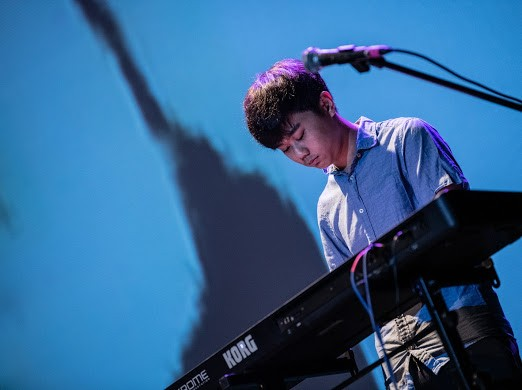

一開始進去選擇的是鍵盤樂器。這對幾乎零基礎的我是一個相當困難學習的樂器。不過在學長與同學的教學與渲染下，我開始喜歡上了去演奏音樂。
同時因為加入了熱音社，所以聽的音樂領域變得更廣了，包含
搖滾、流行、爵士、金屬各式各樣的音樂豐富了我的生活。我也從此愛上了日語音樂。
很多創作歌手包括
米津玄師、星野源成為了我憧憬的對象。除了這些，我也努力去考取社團內的分團考試，就是為了取得上台表演的機會。
最後我成功通過考試，並與其他成員組團表演，其中我參加了
北部八校熱音聯展、台中四省中熱音聯展以及其他的小表演，像是台中一中女中聯合歌唱大賽的中場表演。
